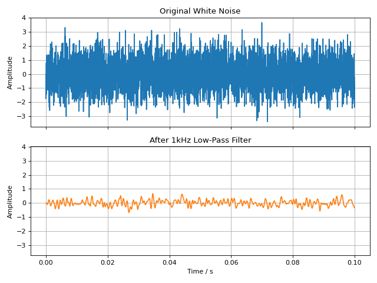

Filtering
The audiotoolbox library provides access to commonly used filters as
well as the option to generate and apply filterbanks.
Applying Filters to Signals
The easiest way to filter a signal is to use the methods directly
available on the Signal object. This provides a
unified, fluent interface for low-pass, high-pass, and band-pass
filtering.
For gammatone filtering, bandpass can return a complex-valued signal
via return_complex=True. In that case, a new complex Signal is
returned instead of modifying the input in place.
The following example demonstrates applying a low-pass filter to a white noise signal.
import audiotoolbox as audio
import matplotlib.pyplot as plt
import numpy as np
# Create a white noise signal
sig = audio.Signal(n_channels=1, duration=100e-3, fs=48000).add_noise('white')
# Create a low-passed version of the signal
# A copy is made so the original signal is not modified
lp_sig = sig.copy().lowpass(f_cut=1000, filter_type='butter', order=4)
# Plot the original and filtered signals
fig, ax = plt.subplots(2, 1, sharex=True, sharey=True, figsize=(8, 6))
ax[0].plot(sig.time, sig, label='Original')
ax[0].set_title('Original White Noise')
ax[0].grid(True)
ax[1].plot(lp_sig.time, lp_sig, label='Filtered', color='C1')
ax[1].set_title('After 1kHz Low-Pass Filter')
ax[1].set_xlabel('Time / s')
ax[1].grid(True)
for a in ax:
a.set_ylabel('Amplitude')
plt.tight_layout()
plt.show()
(Source code, png, hires.png, pdf)
{kind=link}
{kind=link}

Filter Functions
For more direct control, you can also use the filter functions available in
the audiotoolbox.filter submodule. These functions take a signal
as their first argument.
The unified functional API mirrors the fluent Signal
methods and is useful when working with arrays/signals in a functional style:
The following filters are available:
butterworth(): A Butterworth filter.brickwall(): A brickwall (ideal) filter implemented in the frequency domain.gammatone(): A (complex-valued) gammatone filter.efilt(): A complex exponential band-pass filter.
In bandpass(), filter_type also supports
'exponential' for a complex exponential band-pass filter.
import audiotoolbox as audio
sig = audio.Signal(n_channels=1, duration=1, fs=48000).add_noise('white')
# Complex exponential band-pass filter around 1 kHz
exp_sig = audio.filter.efilt(sig, fc=1000, bw=200, return_complex=True)
import audiotoolbox as audio
sig = audio.Signal(n_channels=2, duration=1, fs=48000).add_noise()
# Apply a 3rd-order Butterworth low-pass filter
filt_sig = audio.filter.butterworth(sig, high_f=1000, order=3)
Filterbanks
audiotoolbox provides two commonly used standard filterbanks and allows for the creation of custom banks.
Standard Filterbanks
The following standard filterbanks are available:
octave_bank(): A (fractional) octave filterbank.auditory_gamma_bank(): An auditory gammatone filterbank.
A 1/3-octave filterbank can be generated as follows:
import audiotoolbox as audio
bank = audio.filter.bank.octave_bank(
fs=48000, flow=25, fhigh=20000, oct_fraction=3
)
# The .fc property contains the center frequencies
print(bank.fc)
Applying a Filterbank
A filterbank can be applied to a signal using its filt() method. This
returns a multi-channel signal where each channel corresponds to the
output of one filter in the bank.
sig = audio.Signal(n_channels=2, duration=1, fs=48000).add_noise()
# Filter the signal with the entire bank
filt_sig = bank.filt(sig)
# The output has shape (n_samples, n_original_channels, n_filters)
print(f"Shape of filtered signal: {filt_sig.shape}")
You can also index the filterbank to apply only a subset of filters:
# Apply only the 10th through 15th filters of the bank
filt_sig_partial = bank[10:15].filt(sig)
print(f"Shape of partially filtered signal: {filt_sig_partial.shape}")
Custom Filterbanks
The create_filterbank() function can be
used to create custom filterbanks from 'butter', 'gammatone',
and 'brickwall' filter types.
import audiotoolbox as audio
import numpy as np
# Define center frequencies and bandwidths
fc_vec = np.array([100, 200, 300])
bw_vec = np.array([10, 20, 30])
# Create a custom brickwall filterbank
custom_bank = audio.filter.bank.create_filterbank(
fc=fc_vec, bw=bw_vec, filter_type='brickwall', fs=48000
)
Frequency Weighting Filters
audiotoolbox implements A- and C-weighting filters following the
IEC 61672-1 standard. While the weighted levels can be accessed directly
via the sig.stats interface (see SignalStats,
e.g., sig.stats.dba),
the filters can also be applied directly.
noise = audio.Signal(n_channels=1, duration=1, fs=48000).add_noise('pink')
# Apply A-weighting filter
a_weighted_noise = audio.filter.a_weighting(noise)